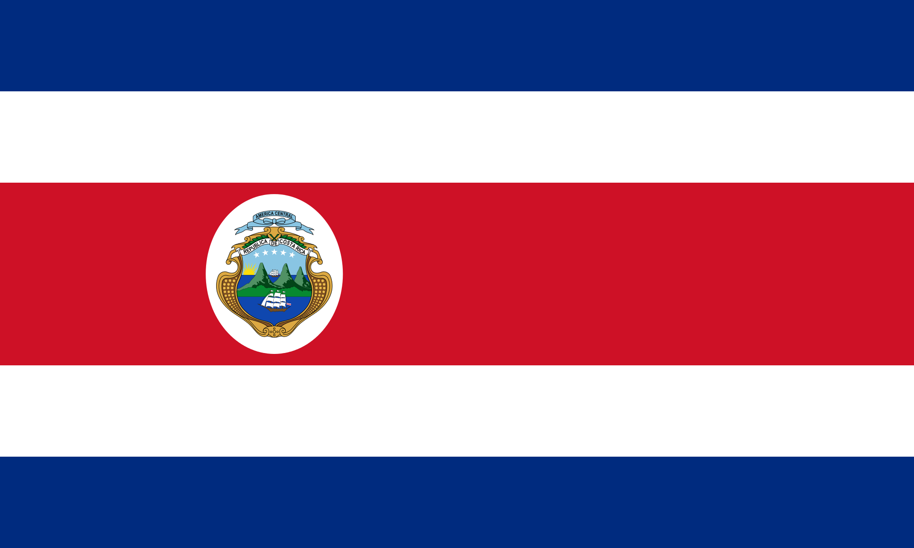
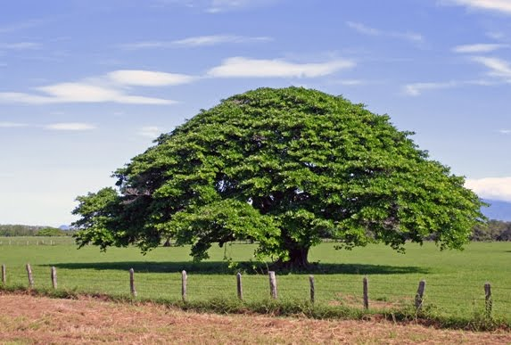
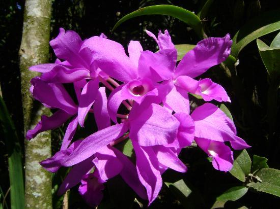
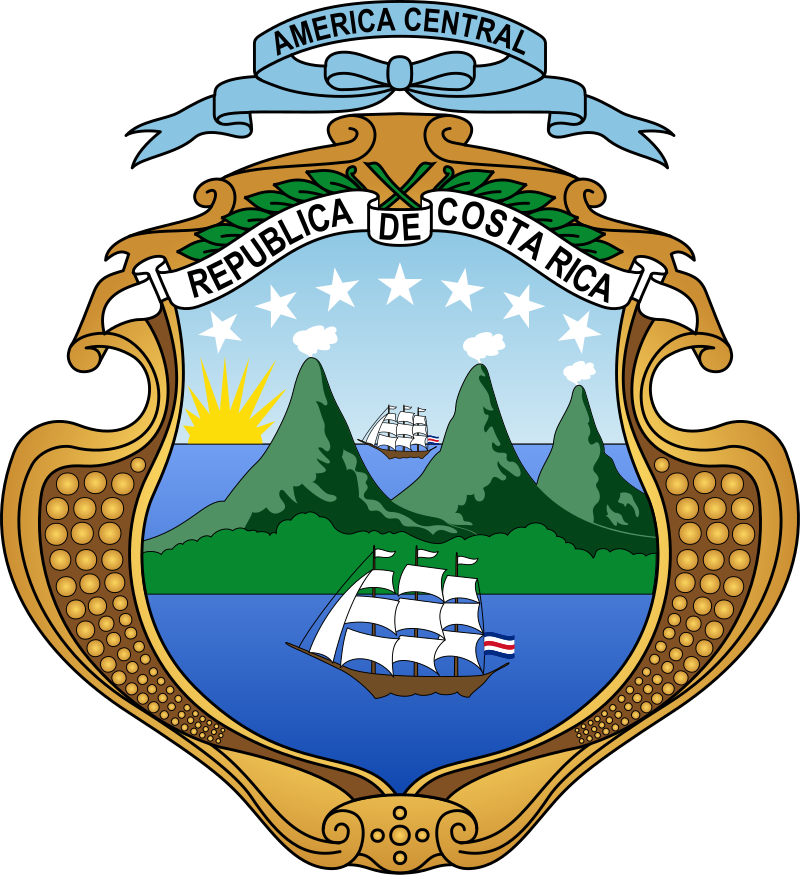

COSTA RICA
HISTORIA
Costa Rica obtiene su independencia el 15 de septiembre de 1821 y se adhiere a la República Federal de
Centroamérica. Sin embargo, el Pacto Federal se disuelve de facto entre 1838 y 1839 y cada provincia
declara su independencia. Es en este contexto que Costa Rica se convierte en República en 1848.
La historia de Costa Rica abarca el estudio, descripción y análisis de los principales procesos y
eventos
históricos de este país centroamericano, desde la ocupación de su actual territorio por cazadores y
recolectores hace unos 12.000 años, el surgimiento de las primeras sociedades cacicales prehispánicas,
pasando por la llegada, conquista y colonización por parte de los españoles; el proceso de configuración
como una nación independiente, la formación y consolidación de su democracia (una de las más antiguas de
América), así como sus períodos de crisis sociales y económicas, hasta el presente.
Durante el período de la Junta Militar, una nueva Constitución, que conserva la normativa social del
período de Calderón Guardia (1940-1944), es adoptada. Esto da nacimiento a la Segunda República, aún
vigente el día de hoy. Esta nueva Constitución crea un poder electoral independiente (el Tribunal
Supremo de Elecciones), responsable de garantizar la transparencia de las elecciones futuras. Por otra
parte, José Figueres decide abolir el ejército, estimando que éste implicaba gastos inútiles y que no
garantizaba la estabilidad del país.
BANDERA
La Bandera de Costa Rica está formada por tres colores colocados horizontalmente, una franja roja en el centro entre dos blancas y a cada una de las cuales les sigue una azul. Fue creada el 29 de septiembre de 1848 junto con el Escudo Nacional. La tradición establece que la concepción y diseño de la actual bandera, vigente desde ese año, correspondió a Doña Pacífica Fernández Oreamuno, esposa del primer presidente de Costa Rica; José Castro Madriz, inspirada en la bandera de Francia. La bandera es tricolor por medio de cinco franjas colocadas horizontalmente, una roja en el centro comprendida entre dos blancas, a cada una de las cuales sigue una azul. El ancho de cada faja es la sexta parte del de la bandera, excepto la roja que es de dos sextas. El Pabellón Nacional se diferencia porque centrado en la banda roja, lleva bordado sobre fondo blanco el Escudo Nacional.
AVE

El Yigüirro (Turdus Grayi) es un ave paseriforme de la familia Turdidae que habita en América Central. Con un tamaño que va de 23 a 27 centímetros y un peso de 74 a 76 gramos su color marrón, más oscuro en las especies que habitan los humedales, le hace pasar desapercibido a ojos del turista. No obstante, si está atento, se dará cuenta de que su alegre y acogedor canto estará presente como lienzo de fondo durante la mayor parte del viaje, siempre acompañándole.
ÁRBOL
El árbol de Guanacaste fue declarado como el árbol nacional de Costa Rica el 31 de agosto de 1959, durante el gobierno de Mario Echandi Jiménez. Fue escogido como homenaje a los guanacastecos, por su Anexión del Partido de Nicoya al país en 1824. En estado natural, el árbol de Guanacaste se distribuye en ambos litorales, tanto el Pacífico como el Atlántico, pero es más común en el Pacífico, en altitudes que rondan los 0 y 1300 msnm. Se han encontrado especímenes en México, Centroamérica, el norte de Suramérica y las Antillas.
FLOR
La orquídea morada conocida popularmente como la guaria morada cuyo nombre cientfico es Cattleya Skineri florece en los meses de febrero y marzo.La guaria morada fue decretada como flor nacional en el gobierno de León Cortés Castro por la Secretaría del Estado en el Despacho de Fomento y Agricultura, por acuerdo No. 24 del 15 de junio de 1939. Posteriormente, mediante el acuerdo ejecutivo No. 24, de noviembre de 1972, bajo la presidencia de José Figueres Ferrer, se establece la segunda semana del mes de marzo como semana de la Orquídea Costarricense. En 1934, se compuso una canción dedicada a esta flor, que actualmente en uno de los himnos patrios de Costa Rica.
ESCUDO
Fue decretado el 29 de septiembre de 1848. Consiste en un marco dorado que representa el grano de oro (el café). Dentro del marco hay tres volcanes humeantes, de color verde azul, que simbolizan a los volcanes y las tres cordilleras que cruzan el país y un extenso valle verde claro entre dos océanos azules (océano Pacífico y mar Caribe, que bañan las costas del oeste y el este del país, respectivamente, al igual que las de Centroamérica). En cada uno de estos hay un buque mercante representando la historia marítima del país. En el horizonte, a la izquierda del escudo, se aprecia un sol naciente de oro viejo.
ORGANIZACIÓN TERRITORIAL
La organización territorial comprende de 7 provincias, 82 cantones y 488 distritos. La División Territorial Administrativa de la República define con fundamento en las leyes, decretos, acuerdos tomados por la Comisión Nacional de la División Administrativa y situaciones de hecho la demarcación de estos territorios.
- San José
- Alajuela
- Cartago
- Heredia
- Guanacaste
- Puntarenas
- Limón